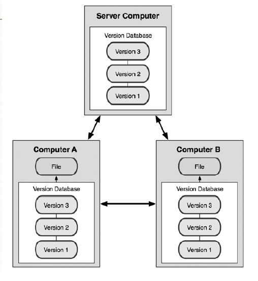

کلاینت ها فقط آخرین اسنپ شات فایل ها را چک اوت نمی کنند ، بلکه در واقع تمام آن ریپوزیتوری را دریافت می کنند.
بنابراین هر کلاینت ریپوزیتوری ای می تواند بک آپی از کل سرور را کپی کرده و بازیابی کند.
شکل زیر را با دقت ببینید:

خیلی از این سیستم ها به خوبی داشتن چندین ریموت ریپوزیتوری و کار کردن با آن ها را هندل می کنند.
بنابراین کاربران می توانند به صورت همزمان روی یک پروژه کار کنند و مشکلی از این بابت وجود ندارد.